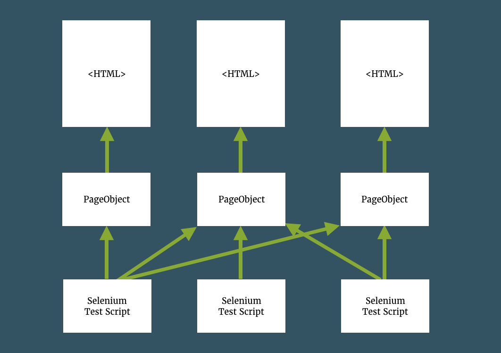

Web
Carina framework follows Selenium best practices for web test automation. If you are familiar with Selenium WebDriver and have already implemented a few tests with the Page Object Pattern, the following guide will be much easier for understanding. We have chosen GSM Arena public web site for demonstration purposes, the whole test source code is located in carina-demo Github repo.
Implementation of Page Objects
When you are writing functional tests using Selenium, the major part of your code will consist of interactions with the web interface you are testing through the WebDriver API. After fetching elements, you will verify some state of an element through various assertions and move on to fetching the next element. You may find WebElements directly in your tests:
List<WebElement> zipCodes = driver.findElements(By.id("zipCodes"));
for (WebElement zipCode : zipCodes) {
if (zipCode.getText().equals("12345")){
zipCode.click();
break;
}
}
WebElement city = driver.findElement(By.id("city"));
assertEquals("MyCityName", city.getText());
Some of the typical problems for this type of Selenium tests are:
- Test cases are difficult to read
- Changes in the UI break multiple tests, often in several places
- Duplication of selectors both inside and across tests - no reuse
So, instead of having each test fetch elements directly and being fragile towards the UI changes, the Page Object Pattern introduces what is basically a decoupling layer.
You create an object that represents the UI you want to test, which can be a whole page or a significant part of it. The responsibility of this object is to wrap HTML elements and encapsulate interactions with the UI, meaning that this is where all calls to WebDriver will go. This is where most WebElements are. And this is the only place you need to modify when the UI changes.

In general, Page Object contains locators of the elements situated on the page and some business logic that may be reused by different tests:
public class ModelInfoPage extends AbstractPage {
@FindBy(css = ".help-display strong")
private ExtendedWebElement displayInfoLabel;
@FindBy(css = ".help-camera strong")
private ExtendedWebElement cameraInfoLabel;
@FindBy(css = ".help-expansion strong")
private ExtendedWebElement displayRamLabel;
@FindBy(css = ".help-battery strong")
private ExtendedWebElement batteryInfoLabel;
public ModelInfoPage(WebDriver driver) {
super(driver);
}
public String readDisplay() {
assertElementPresent(displayInfoLabel);
return displayInfoLabel.getText();
}
public String readCamera() {
assertElementPresent(cameraInfoLabel);
return cameraInfoLabel.getText();
}
public String readRam() {
assertElementPresent(displayRamLabel);
return displayRamLabel.getText();
}
public String readBattery() {
assertElementPresent(displayInfoLabel);
return batteryInfoLabel.getText();
}
}
Important:
- Page should extend com.zebrunner.carina.webdriver.gui.AbstractPage
- Use com.zebrunner.carina.webdriver.decorator.ExtendedWebElement instead of Selenium WebElement
- Locate Page Object classes in
src/main/java
Implementation of UI Components
In some cases, it is useful to implement UI Objects that may be reused between multiple Page Objects. For instance, a top menu or footer may be shared between multiple pages:
public class FooterMenu extends AbstractUIObject {
@FindBy(linkText = "Home")
private ExtendedWebElement homeLink;
@FindBy(linkText = "Compare")
private ExtendedWebElement compareLink;
public FooterMenu(WebDriver driver, SearchContext searchContext) {
super(driver, searchContext);
}
public HomePage openHomePage() {
homeLink.click();
return new HomePage(driver);
}
public CompareModelsPage openComparePage() {
compareLink.click();
return new CompareModelsPage(driver);
}
}
And then you can use this in Page Object:
public class HomePage extends AbstractPage {
@FindBy(id = "footmenu")
private FooterMenu footerMenu;
@FindBy(xpath = "//div[contains(@class, 'brandmenu-v2')]//a")
private List<ExtendedWebElement> brandLinks;
public HomePage(WebDriver driver) {
super(driver);
}
public FooterMenu getFooterMenu() {
return footerMenu;
}
public BrandModelsPage selectBrand(String brand) {
LOGGER.info("selecting '" + brand + "' brand...");
for (ExtendedWebElement brandLink : brandLinks) {
String currentBrand = brandLink.getText();
LOGGER.info("currentBrand: " + currentBrand);
if (brand.equalsIgnoreCase(currentBrand)) {
brandLink.click();
return new BrandModelsPage(driver);
}
}
throw new RuntimeException("Unable to open brand: " + brand);
}
}
Important:
- UI Object should extend com.zebrunner.carina.webdriver.gui.AbstractUIObject
- You should call the super constructor super(driver, searchContext) where searchContext is an instance of org.openqa.selenium.SearchContext
- Locate UI Object classes in
src/main/javasource folder
Implementation of Context annotation
In some cases, it is useful to reduce elements locator by using @Context annotation.
For example, instead of using:
@FindBy(xpath = "//div[@class='search-field']//input")
private ExtendedWebElement searchField;
@FindBy(xpath = "//div[@class='search-field']//button")
private ExtendedWebElement searchButton;
We can aggregate the same locator into new element. Then we need refer to it in @Context annotation like this:
@FindBy(xpath = "//div[@class='search-field']")
private ExtendedWebElement searchComp;
@Context(dependsOn = "searchComp")
@FindBy(tagName = "input")
private ExtendedWebElement searchField;
@Context(dependsOn = "searchComp")
@FindBy(tagName = "button")
private ExtendedWebElement searchButton;
With context annotation could be also created chains of elements dependency
@FindBy(id = "news")
private ExtendedWebElement newsBlock;
@Context(dependsOn = "newsBlock")
@FindBy(xpath = ".//div[@class='news-item']")
private ExtendedWebElement newsItem;
@Context(dependsOn = "newsItem")
@FindBy(tagName = "h3")
private ExtendedWebElement newsTitle;
@Context can also refer to element from super class by its name.
Referred element type could be:
- ExtendedWebElement
- Extends from AbstractUIObject
Elements type that are marked with @Context annotation could be:
- ExtendedWebElement
- Extends from AbstractUIObject
- List <ExtendedWebElement>
- List<? extends AbstractUIObject>
Work with iframe
Before working with an iframe, you need to understand that an iframe is a separate page. Therefore, if we need to work with the internal structure of an iframe, we need to create a separate class for it inherited from AbstractPage, in which we already paint its internal structure, for example:
public class Frame extends AbstractPage {
@FindBy(xpath = "//div[@class='tag-of-element']")
private ExtendedWebElement component;
public Frame(WebDriver driver) {
super(driver);
}
public void click() {
component.click();
}
}
Let's suppose the iframe is a page component or another component. Then we have to designate it as ExtendedWebElement, for example:
@FindBy(xpath = ".//iframe")
private ExtendedWebElement iframe;
If we need to perform actions on iframe components, we can do:
Frame frame = new Frame(driver);
driver.switchTo().frame(iframe.getElement());
frame.click();
getDriver().switchTo().defaultContent();
Implementation of tests
Carina framework uses TestNG for test organization. In general, a test represents a manipulation with Page Objects and additional validations of UI events. Here is a sample test implementation:
public class WebSampleTest implements IAbstractTest {
@Test()
@MethodOwner(owner = "qpsdemo")
public void testCompareModels() {
// Open GSM Arena home page and verify page is opened
HomePage homePage = new HomePage(getDriver());
homePage.open();
Assert.assertTrue(homePage.isPageOpened(), "Home page is not opened");
// Open model compare page
FooterMenu footerMenu = homePage.getFooterMenu();
Assert.assertTrue(footerMenu.isUIObjectPresent(2), "Footer menu wasn't found!");
CompareModelsPage comparePage = footerMenu.openComparePage();
// Compare 3 models
List<ModelSpecs> specs = comparePage.compareModels("Samsung Galaxy J3", "Samsung Galaxy J5", "Samsung Galaxy J7 Pro");
// Verify model announced dates
Assert.assertEquals(specs.get(0).readSpec(SpecType.ANNOUNCED), "2015, November");
Assert.assertEquals(specs.get(1).readSpec(SpecType.ANNOUNCED), "2016, September");
Assert.assertEquals(specs.get(2).readSpec(SpecType.ANNOUNCED), "2017, June");
}
}
It is good practice to implement all elements search logic of Page Object/UI Object side and perform assertions and validations in the test, do not mix this logic.
Important:
- Test class should implement com.zebrunner.carina.core.IAbstractTest
- Test method should start with org.testng.annotations.Test annotation
- Use getDriver() method to get driver instance in the test.
1st call of this method will start a driver based on default capabilities.
- Locate tests in
src/test/javasource folder
Test configuration
There are a few critical properties in a _config.properties file which are required for web test execution:
url=http://www.gsmarena.com
capabilities.browserName=chrome
The implemented test cases should be placed in a TestNG xml file according to the test group the test belongs to. You can find more details about TestNG configuration in the official documentation.
<!DOCTYPE suite SYSTEM "https://testng.org/testng-1.0.dtd">
<suite verbose="1" name="Carina Demo Tests - Web Sample" parallel="methods">
<test name="GSM arena web tests">
<classes>
<class name="com.zebrunner.carina.demo.WebSampleTest" />
</classes>
</test>
</suite>
Page opening strategy
Determines how Carina detects whether the expected page is opened:
- By URL (by default)
- By Element presence on the page
- By URL and Element
To check if a page was opened, you can use the following:
page.isPageOpened();
//or
page.assertPageOpened(); // equals Assert.assertTrue(page.isPageOpened(),"PageName not loaded: reason);
Page opening strategy configuration can be set in several places:
1) in _config.properties. This determines the whole project page open strategy.
2) In page class. This overrides global page opening strategy for a specific page.
public class Page extends AbstractPage {
public Page(WebDriver driver){
super(driver);
setPageOpeningStrategy(PageOpeningStrategy.BY_URL);
}
}
3) In test class. This also overrides global page opening strategy for a specific page.
@Test
public void test(){
HomePage homePage=new HomePage(getDriver());
homePage.open();
homePage.setPageOpeningStrategy(PageOpeningStrategy.BY_URL);
}
Strategy usage examples:
By URL
//This is a default value. To use it, you need to set a real page URLs into your page classes.
private final String specificPageUrl = "https://www.gsmarena.com/specific/url";
public Page(WebDriver driver) {
super(driver);
setPageOpeningStrategy(PageOpeningStrategy.BY_URL);
setPageAbsoluteURL(specificPageUrl); //set's full url
//or
setPageURL("/specific/url"); //add's String to url from _config_properties
}
By Element
//To use this strategy, you need to specify ui load marker.
@FindBy(id = "id")
private ExtendedWebElement element;
public Page(WebDriver driver) {
super(driver);
setPageOpeningStrategy(PageOpeningStrategy.BY_ELEMENT);
setUiLoadedMarker(element);
}
By URL and Element
private final String specificPageUrl = "https://www.gsmarena.com/specific/url";
@FindBy(id = "id")
private ExtendedWebElement element;
public Page(WebDriver driver) {
super(driver);
setPageOpeningStrategy(PageOpeningStrategy.BY_URL_AND_ELEMENT);
setUiLoadedMarker(element);
setPageAbsoluteURL(specificPageUrl);
}
Element loading strategy
Determines how carina detects appearing of web elements on page:
- By presence. Carina waits for appearance of web elements in page DOM model.
- By visibility. Carina waits until web elements are visible in page.
- By presence or visibility (default).
It is recommended to use element_loading_strategy=BY_VISIBILITY because in some cases, condition with presence happens faster but elements are still not accessible due to invisibility at this short period of time.
Element loading strategy can be set at the same places as Page opening strategy.
To check if the element is present:
Component component = Page.getComponent();
// equals to Assert.assertTrue(component.isUIObjectPresent(),"UI object componentName does not present!");
component.assertUIObjectPresent();
// equals to Assert.assertTrue(!component.isUIObjectPresent(),"UI object componentName presents!");
component.assertUIObjectNotPresent();
Dynamic elements loading. waitForJSToLoad() method was introduced in AbstractPage class. It uses JS under the hood and helps to wait till all the dynamic web elements on the page are loaded.
FAQ
What are the benefits of the AbstractUIObject?
The biggest advantage of AbstractUIObject(s) is that you have a single place of truth to declare elements and later change the updated locator in one place. It also allows to considerably speed up all kinds of refactoring, especially after significant changes by developers:)
Is it possible to automate WebApp written on React, Angular, Vue, Flutter, Google Web Toolkit and other popular and not frameworks?
Carina is a Selenium-based framework so no limitations at this point. Moreover, playing with the page opening and element loading strategies, you can tune this test automation framework to any tool set.
Can I operate with Page elements on test classes layer?
In general, it is not prohibited, but not recommended! Isolating page elements by private access modificator allows you to control the implementation in the single Page Object class.
//In the page class:
@FindBy(id = "js-lang-list-button")
private ExtendedWebElement langListBtn;
@FindBy(xpath = "//div[@id='js-lang-lists']//a")
private List<ExtendedWebElement> langList;
public WikipediaLocalePage goToWikipediaLocalePage(WebDriver driver) {
openLangList();
if (!langList.isEmpty()) {
for (ExtendedWebElement languageBtn : langList) {
String localeStr = Configuration.get(Configuration.Parameter.LOCALE);
Locale locale = parseLocale(localeStr);
if (languageBtn.getAttribute("lang").equals(locale.getLanguage())) {
languageBtn.click();
return new WikipediaLocalePage(driver);
}
}
}
throw new RuntimeException("No language ref was found");
}
public void openLangList() {
langListBtn.clickIfPresent();
}
//In the test class:
public void someTest() {
WikipediaHomePage wikipediaHomePage = new WikipediaHomePage(getDriver());
wikipediaHomePage.open();
WikipediaLocalePage wikipediaLocalePage = wikipediaHomePage.goToWikipediaLocalePage(getDriver());
}
How to declare and use an ExtendedWebElement with dynamic xpath?
In previous versions of Carina, it was possible to search for an element using a dynamic xpath using such code:
ExtendedWebElement spec = findExtendedWebElement(By.xpath(
String.format("//td[@class='nfo'][%d]//a[text()='%s']", "My link", 1)));
However, this element search format is now deprecated and not recommended to use. There is more convenient way to search:
1) Declare an element using the @FindBy annotation and specify a locator based on the convention used by the Formatter:
@FindBy(xpath = "//a[text()='%s']")
private ExtendedWebElement link;
@FindBy(xpath = "//td[@class='nfo'][%d]")
private ExtendedWebElement cell;
@FindBy(xpath = "//td[@class='nfo'][%d]//a[text()='%s']")
private ExtendedWebElement cellLink
2) In code where these elements will be used, use the format method to format the locator and create an ExtendedWebElement based on it for later use:
// a link that have the text "My link"
link.format("My link")
// td tag with class 'nfo' by index 2
cell.format(2)
// a link that have the text "My link" that is in the td tag with class 'nfo' by index 2
cellLink.format(2, "My link");
3) As a result of calling this method, we get a specific ExtendedWebElement, which we can use in the future, for example:
//getting text of element
cell.format("My link").getText();
How do I install extensions for Chrome?
Installing an extension for Chrome is done by using the addEncodedExtensions method of ChromeOptions class, for example:
ChromeOptions options = new ChromeCapabilities().getCapability("default");
List<File> paths = new ArrayList();
paths.add(new File("path to the file with crx extension (packed Chrome extension)"));
options.addEncodedExtensions(paths);
getDriver("default", options);